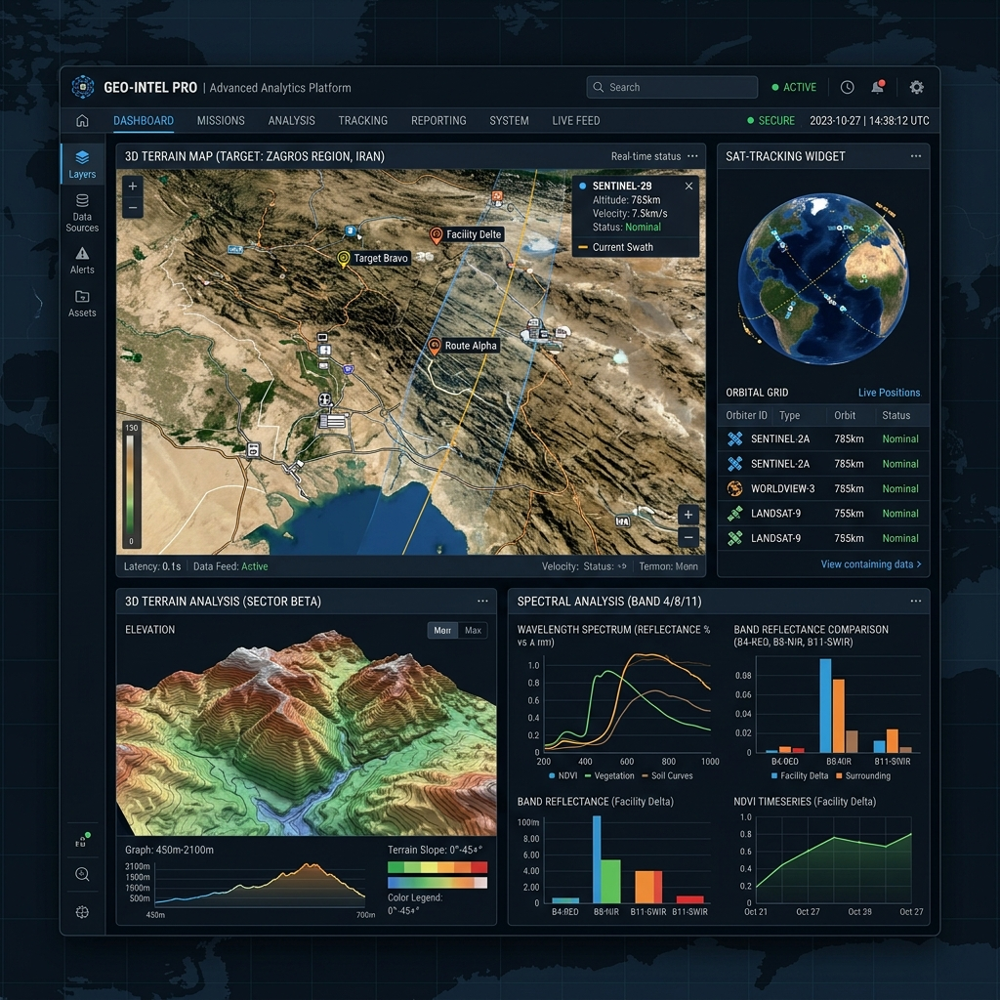
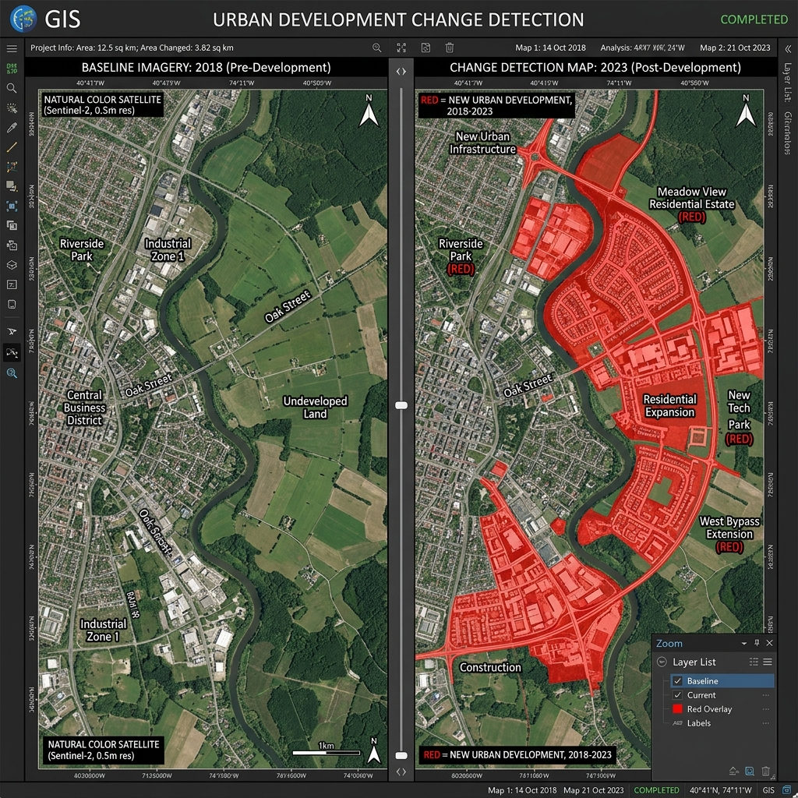

Advanced geospatial analytics, vegetation monitoring, and change detection solutions for agriculture, defense, and environmental intelligence.
A systematic approach to multi-spectral data analysis
Retrieving high-resolution imagery from Sentinel, Landsat, and private constellations.
Advanced atmospheric correction and cloud masking using AI-driven pipelines.
Converting raw spectral data into visual reports and decision-ready datasets.
Our hybrid orbital network provides 24/7 persistent monitoring across all latitudes, delivering sub-meter resolution data within minutes of acquisition.

Leveraging the full electromagnetic spectrum to identify hidden patterns that the human eye cannot detect.
Precision agriculture and forest health tracking
Peak vigor detection
Increase in accuracy
Early warning system
Rapid data turnaround

Track progress over days, months, or decades. Our time-series analysis reveals subtle changes in urban sprawl, deforestation, and coastline erosion.
Identify exact pixel-level modifications and spectral shifts over any duration.
Access over 40 years of calibrated satellite imagery for deep longitudinal research.
Forecast future environmental and urban trends using proprietary ML algorithms.
Configure instant notifications for anomalies or specific land-use alterations.
Synthesize data from SAR, LiDAR, and optical sensors for a complete 4D perspective.
Trusted by leaders in agriculture, defense, and environmental NGOs
"The level of detail in the vegetation reports allowed us to optimize our nitrogen application, saving over $200k in the first season."
"Critical for our disaster response monitoring. The speed of change detection reporting is unmatched in the freelance market."
"Professional, precise, and highly analytical. The satellite data was converted into exactly what our board needed to see."